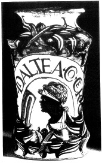

ŞEKİL 35. Castel Durante’den fayans alberello:
“DI ALTEA . CO . CER” (balmumlu ağaç hatmisi merhemi) (1530 yılı dolayı).32
Kap olarak “albarello”nun (çoğulu “albarelli”) yanı sıra ibrikler (çoğu kez şuruplar için), şişeler (damıtık suların korunması için) ya da değişik şekilli kullanışlı kaplar kullanılmıştır. 1708 yılında Johann Friedrich Böttger (1682-1719) tarafından beyaz porselenin Avrupa’da rastlantıyla geliştirilmesi, kendi uygun özellikleri yoluyla eczaların korunması amacıyla kap yapımında fayans üretiminin yerine geçerek onu geriletmiştir.47
Fayans ve porselenin yanı sıra eczanelerde eczaların saklanması için cam kaplar da kullanılmıştır. Cam her ne kadar erken yüksek kültürlerce bilinmekte ise de, kap malzemesi olarak ilkin Roma İmparatorluğu’nda belirgin biçimde kullanılmıştır. 17. yüzyılda ise üzeri boyanmış ve yalnızca eczacılıkta kullanım için üzeri yazılmış olan kaplarla karşılaşılmaktadır. Çoğu açık renk, saydam ve renksiz cam kapların boyanmasında ilkin soğuk boyama tekniği kullanılmıştır. Daha sonraları mine (emaye) boyamacılık geliştirilmiş olup bunda metal oksit boyalar düşük sıcaklık ısıtmasıyla eritilerek cam ya da seramik yüzeyine kimyasal yolla bağlanıyordu (ŞEKİL 36). 47